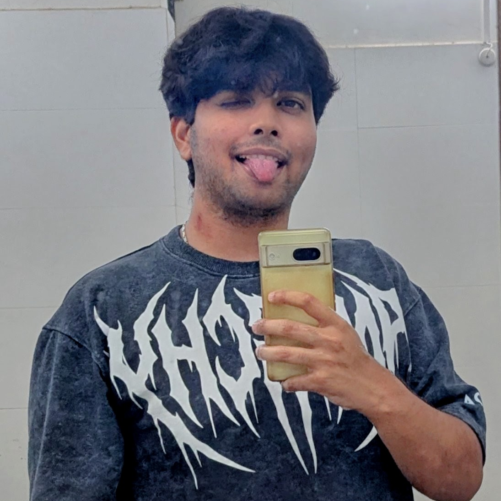

System.out.println("Hello World");
Well...................life's actually kinda good rn!
Umm, I genuinely don't even kow what to say or why I'm even doing this, but well I guess it looks cool and is a way to throw my insanity out there so here goes. I was always confident that I would post after the first publication. Ik I'm a little late (1 month is nothing ifykyk), but well here goes. I hope that not a lot of you'll are actually reading this cause this is going to be the weirdest but maybe a crazy journey (into my mind), and it's a very weird place to be in.
But I'm going to make sure that I end up posting more here. Who knows if this is going be an Emily in Paris type shi!? Well for those of you who're wondering how life's good, I'll explain. Had a lotta research firsts recently. First conference, First poster, First publication, First intern; somehow it's not the first midsem that is coming in 2 hrs and I might start studying now ig. But well, if you're reading u also know that there's no point in getting the GPA up now.
In other updates, Quark is over, this post-cordinator Nirvana state is bliss, I'd wholly recommend it to anyone ik. But everything will obv pale in comparision to seeing the Northern Lights..hehe!!
And, if you're wondering why Java well I'll explain, this website is made to pay tribute to all these firsts I talked about. Java was the first programming language I learnt (decently). The footer bars, Liquid Crystals, my first project what introduced me this field. My timeline, with my first pic. Honor the firsts.
I'll come back with a new post soon. Till then Adjø.
